← Tous les projets

La spécialité de la maison
Cofféa
Deux ans de communication
Mon alternance chez une enseigne de café, thé et gourmandises. De conseillère de vente à chargée de communication en autonomie complète : réseaux sociaux, site web, rédaction, illustration et supports boutique.
Le parcours
De la boutique à la communication
Je suis entrée chez Cofféa par la boutique, en CDI de conseillère de vente. C'est là que j'ai appris les produits, les clients et les questions qu'ils posent vraiment. Puis l'alternance, d'abord en appui de la responsable marketing, et aujourd'hui en autonomie complète sur la communication de l'enseigne.
Janvier 2024
Conseillère de vente. Le conseil, la vente, et déjà le TikTok de la boutique.
Septembre 2024
Assistante communication en alternance, sous la supervision de la responsable marketing.
Février 2026
Chargée de communication en autonomie : Instagram, Facebook, TikTok et LinkedIn.
Les réalisations
Les réseaux sociaux
Le compte Instagram de Cofféa est le cœur de mon activité, et j'y porte une intention claire : faire évoluer la communication de la marque d'une logique de catalogue vers quelque chose de plus pédagogique et de plus incarné.
Chez la personne qui suit le compte, je cherche à produire trois choses. L'envie d'abord, en mettant en valeur des produits qui se prêtent naturellement au contenu visuel et sensoriel. La proximité ensuite, en montrant les visages derrière la marque, ses collaborateurs et ses boutiques, ce qui manquait jusqu'alors à Cofféa. Et un peu de savoir enfin, en rendant accessible l'univers parfois technique du café et du thé.
Outils


Le calendrier éditorial
Pour tenir cette ligne, je m'appuie sur un calendrier éditorial hebdomadaire que j'établis sur Trello, organisé par type de contenu, story, réel et publication, pour piloter ma production. Je varie volontairement les formats, du pédagogique à la recette en passant par les ambiances de boutique, et je décline chaque contenu sur plusieurs plateformes, d'Instagram à Facebook via Meta et jusqu'à TikTok, pour toucher des audiences différentes.
Les réels : l'Alphabet du café
« L'Alphabet du café » est une série de réels que j'ai imaginée sur un principe simple : à chaque lettre de l'alphabet correspond un café de la boutique, présenté à travers son origine, ses notes et ses caractéristiques. L'intention est pédagogique avant tout : faire découvrir la gamme en apportant une vraie valeur informative, plutôt qu'en présentant un produit de plus.
Les réels « ambiance boutique »
Ces réels plongent l'audience dans les lieux Cofféa, d'une boutique à l'autre : Rouen, Caen, Mondeville. L'intention est de faire ressentir l'atmosphère plutôt que de montrer un produit, l'univers du café et du thé, les gestes, la chaleur d'un espace de vente.
Ce format ancre la marque dans le réel et le local, met en valeur chaque boutique et son équipe, et donne envie de pousser la porte. Il complète les lignes produit et humaine en apportant le décor, le lieu où tout se passe, et renforce l'image d'une enseigne proche et incarnée.
Les réels « recette »
Ces réels détournent les produits Cofféa en idées à réaliser chez soi. L'intention est de montrer que le thé et le café ne se limitent pas à la tasse classique, mais qu'ils se prêtent à des préparations gourmandes, fraîches et créatives.
Ce format inspire l'audience, donne des idées d'usage concrètes et valorise la gamme sous un angle lifestyle plutôt que catalogue. C'est aussi une façon de mettre les produits en situation, de créer de l'envie et de prolonger l'expérience de la marque au-delà du point de vente.
Les publications « Les visages de Cofféa »
« Les visages de Cofféa » est un format que j'ai développé pour incarner la marque à travers celles et ceux qui la font vivre. Le principe : mettre en avant un collaborateur et son produit préféré, le plus souvent sous la forme d'un carrousel de trois photos, le collaborateur avec son produit, le produit en gros plan, puis une mise en scène en situation.
L'objectif est d'humaniser la marque et de montrer les visages derrière les produits, ce qui manquait jusqu'alors à Cofféa. Cette démarche dépasse Instagram : je la prolonge sur LinkedIn à travers des portraits de collaborateurs, pour donner une présence humaine à l'enseigne sur l'ensemble de ses canaux.
C'est ma façon de rappeler qu'une marque, avant d'être des produits, ce sont d'abord des personnes.
Les publications « produit »
Ces publications mettent en valeur la gamme et les temps forts de la marque : le café du mois, les nouveautés, les rendez-vous saisonniers comme la Saint-Valentin ou Pâques.
L'intention est de donner envie et d'informer sur les produits, mais en rompant avec la fiche catalogue : je privilégie la mise en scène et une présentation vivante, fidèle à l'univers sensoriel de Cofféa. Cette ligne rythme le feed au fil des saisons et des lancements.
Les stories
Les stories assurent la présence quotidienne du compte et entretiennent le lien avec la communauté entre deux temps forts. J'y alterne les registres au fil des jours : contenu pédagogique, mise en avant des produits, ambiances de boutique et coulisses.
Au-delà de la diffusion, je les pense comme un espace d'échange : j'y crée de l'engagement grâce aux formats interactifs propres au support, sondages, questions et quiz, qui invitent la communauté à réagir et à participer. C'est ce rendez-vous quotidien qui maintient le compte vivant, proche de son audience, et qui prolonge au jour le jour les lignes éditoriales portées par les publications et les réels.
Les réalisations
Rédaction : le site, le référencement et LinkedIn
Outils


Les photos produits
Depuis le début de l'année, mes missions se sont élargies au lancement des nouveaux produits sur le site. Je réalise les prises de vue des nouveautés, puis j'en rédige les descriptions commerciales.
La photo et le texte forment un tout : l'image donne le premier regard et l'envie, la description prend le relais pour informer sur l'origine, les notes et les caractéristiques du produit, tout en restant fidèle à l'identité de la marque. Ces fiches doivent à la fois séduire et renseigner le client au moment de son achat.
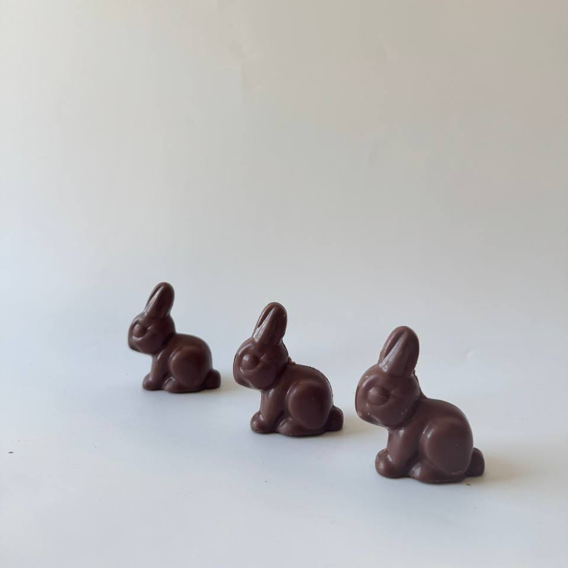
Le blog et LinkedIn
En complément des réseaux sociaux, je développe la présence éditoriale de Cofféa sur deux supports au ton bien différent. Pour le blog du site, je rédige des articles autour de l'univers de la marque, le thé, le café, les origines, les idées cadeaux, pensés pour nourrir le site et accompagner les clients dans leurs découvertes.
Sur LinkedIn, un réseau dont j'ai dû défendre l'intérêt en interne avant de pouvoir l'investir, j'adopte une approche centrée sur l'humain et le réseau de l'enseigne : portraits de collaborateurs, mises en avant des boutiques et des franchises, dans le prolongement de ma démarche « visages de Cofféa ».
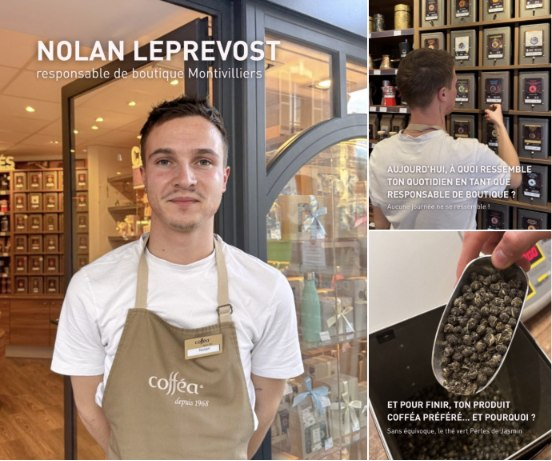
Les réalisations
Pictogrammes de mouture
Outils
Le problème
Sur la boutique en ligne, une même commande réunit souvent plusieurs cafés avec des moutures différentes, qu'il faut pouvoir identifier sachet par sachet. Jusque-là, la mouture était écrite à la main sur le sachet : ça fonctionnait, mais ça manquait de soin et le client le voyait en ouvrant son colis.
La solution
Un pictogramme par type de mouture, qui remplit la même fonction que l'annotation manuelle en plus propre. Des formes simples, nettement différenciées les unes des autres et fidèles à la charte.
Le résultat
Ils servent aujourd'hui à la préparation des commandes en ligne, à la place de l'écriture à la main. Le geste reste aussi simple pour l'équipe, mais le rendu est bien plus soigné, et le client reçoit une commande nette jusque dans ce détail.
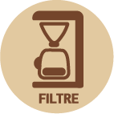
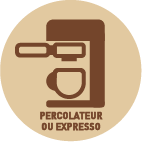
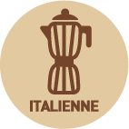
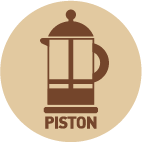
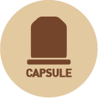
Les réalisations
Supports boutique
Je conçois également les supports d'information sur lieu de vente pour les boutiques de l'enseigne. Commandés par ma responsable, ils servent à mettre en avant les promotions, les nouveautés et les temps forts directement en magasin. Je crée le visuel, puis je le soumets à validation. Une fois validé, j'assure moi-même toute la fabrication : impression sur l'imprimante du siège, plastification et découpe, avant de transmettre les supports finalisés à l'entrepôt qui les expédie dans les boutiques.
Travailler pour le magasin impose des contraintes que l'écran ne connaît pas. Je dois penser lisibilité en rayon, formats adaptés à l'espace de vente, et surtout anticiper le rendu des couleurs en impression interne plutôt qu'en offset professionnel. La plastification, elle, se pense dès la création, pour que le support reste net et résiste dans le temps une fois en boutique.
Outils
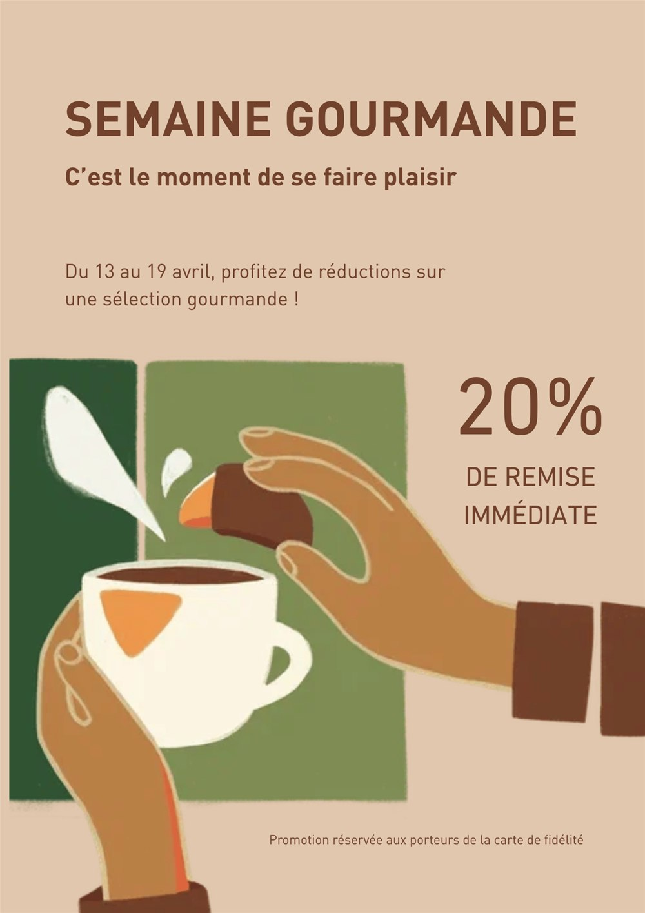
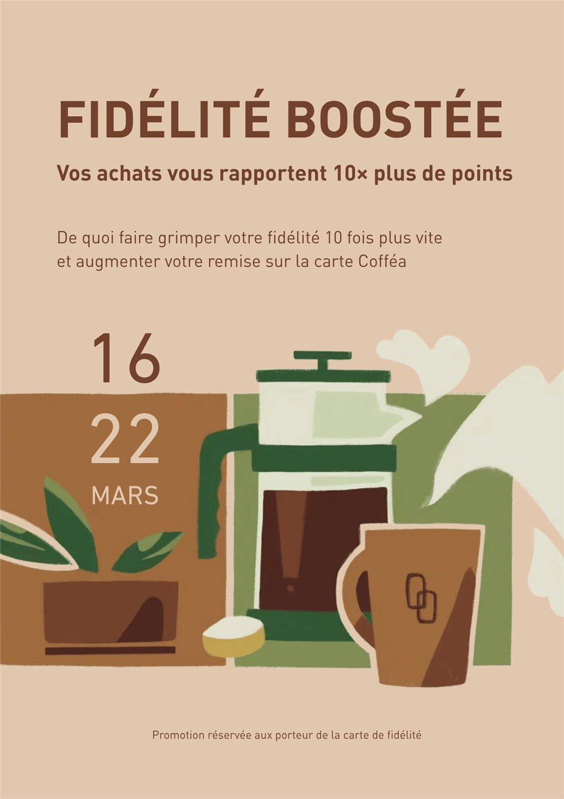
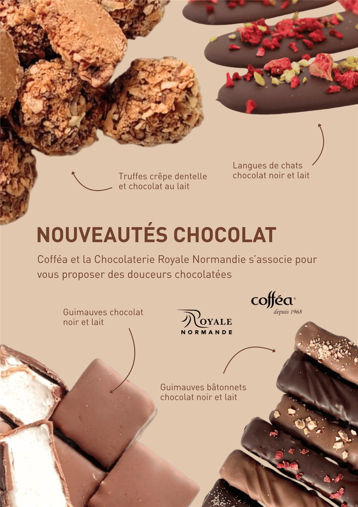
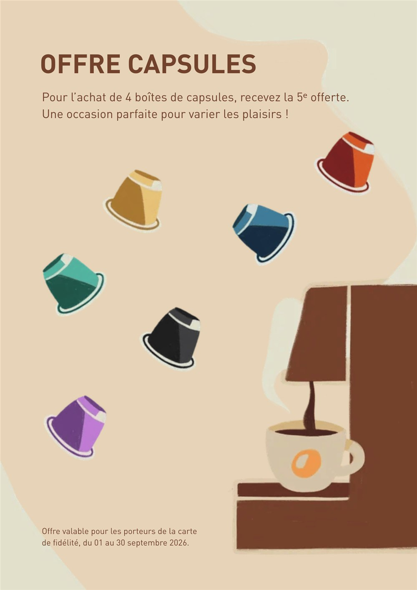
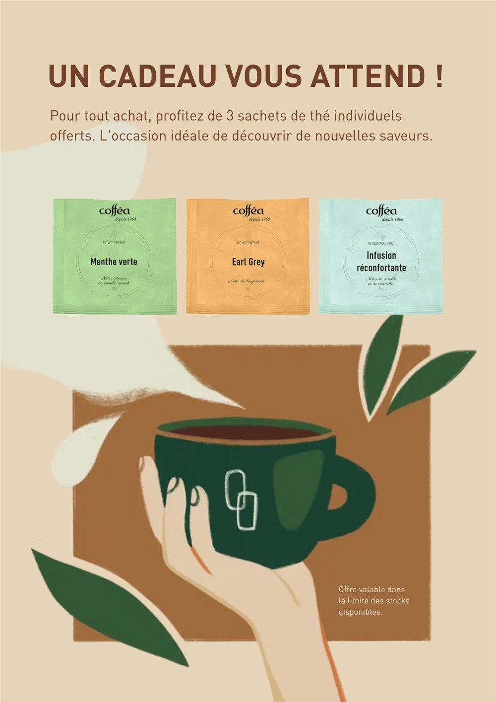
Le mot de la fin
Ce que cette alternance m'a appris
Cette alternance m'a fait passer d'un rôle d'exécution, où chacune de mes productions était soumise à validation, à une véritable autonomie, jusqu'à prendre en main le pilotage des réseaux sociaux de l'enseigne. C'est ce chemin qui m'a le plus appris.
J'ai appris le rythme du réel : créer vite et souvent, tout en gardant une ligne cohérente sur plusieurs canaux. J'ai appris à réfléchir en termes de stratégie de communication et non plus de création isolée, en comprenant qu'un contenu n'a de valeur que s'il sert un objectif : créer du lien, transmettre, valoriser la marque et sa communauté.
J'ai appris à diriger des collaborateurs lors des tournages, avec patience et pédagogie, à défendre mes idées en interne, comme lorsqu'il a fallu convaincre de l'intérêt de LinkedIn, et à collaborer à distance dans un environnement interculturel, avec des interlocuteurs en France et en Russie. Au bout du compte, j'ai gagné en confiance et en légitimité, et cette expérience a confirmé mon orientation vers les métiers de la communication et de la création de contenu.